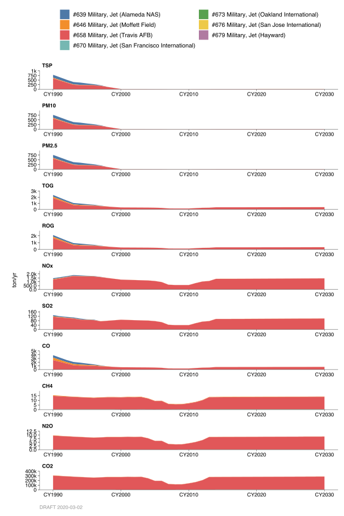
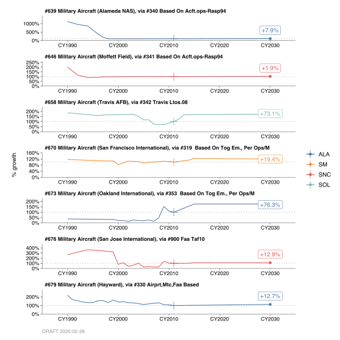

2.14 Military Aircraft, Jet
2.14.1 Emissions
Introduction
Considered in these categories are criteria pollutant (particulate, organic, NOx, SOx, and CO) and greenhouse gas emissions (CO2, CH4, and N2O) from gas turbine (jet) engines from military aircraft at various air bases and naval field or airports in the Bay Area where military operations exist.
The engine consists of a compressor, a combustion chamber and a turbine. Air entering the forward end of the engine is compressed and then heated by burning fuel in the combustion chamber. The engine uses its fan to accelerate additional air around the outside of the engine producing exhaust gases for efficient propulsion.
Methodology
Normal flight and ground operation modes of the aircraft constitutes the landing/takeoff (LTO) cycle. For criteria pollutant emission inventory, the LTO cycle is grouped into five modes, which is equivalent to two operations in an airport activity. These include:
- Startup, idle and taxi out,
- Takeoff,
- Climb out to about 2,300 feet–this height is considered the average mixing depth and assumed inversion height, wherein aircraft exhaust emissions are released below it,
- Descent/approach from about 2,300 feet, touch down, and landing run, and
- Taxi in, idle and shutdown.
For greenhouse gas (GHG) emission inventory, in addition to LTO cycle explained above, the aircraft landing approach and climb out modes above 2,300 feet elevation and aircraft cruise mode in the District’s air space is also included.
The numbers of operations were obtained and/or estimated for the military air bases and naval facilities in the Bay Area. Modal emission rates for aircraft engines were obtained from the FAA’s Aircraft Engine Emission Database, the U.S. Environmental Protection Agency (EPA), International Civil Aviation Organization (ICAO), and Intergovernmental Panel on Climate Change (IPCC). There are numerous types of military aircraft in use today. Aircraft types considered in these categories include only those believed to be of significant at present.
The LTO cycle has its equivalent operating time-in-mode (TIM), which is the time for a particular aircraft to go through each of the five modes. Composite modal emission rates (MER) for each of the various types of aircraft engines now in military use were developed based on information from various references noted above. Emission rates vary according to engine type and mode. Emission factors for a specific aircraft were estimated by the equation:
\[ \text{EMF} = \text{N} \times \sum{\left( v_e / v_t \right)_{m,p}} \times \text{TIM} \]
Composite emission factors for each of the military bases were developed using estimates of aircraft mix for each facility based on historical activity and data on home-based aircraft.
Sample calculations
\[ 10,800\ \text{LTO/yr} \times 28.08\ \text{lb/LTO} \div 365\ \text{day/yr} \div \text{2000 lb/ton} = 0.42\ \text{ton/day}\ \text{TOG} \]
County Distribution
The county location of each airbase, naval facility, or airport with military activities in the Bay Area was used to distribute emissions into each county.
Monthly Variation
Monthly distribution for military aircraft was estimated to be uniform for all months.
2.14.2 Trends
History

Emissions through the years were based on the reported and/or estimated number of operations for each airbase/naval facility/airport.
Growth

Projections are based on the airport reported data, the Regional Airport Plan Update Programs and other estimations.
By: Sukarn Claire Date: January 2014 Base Year: 2011